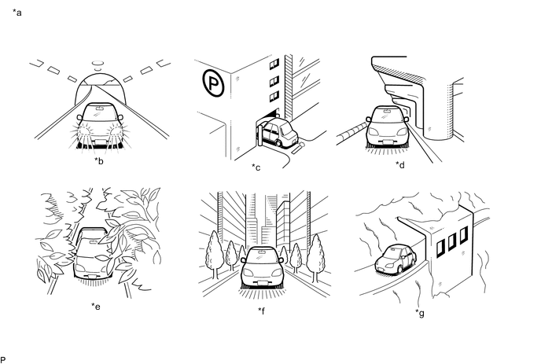
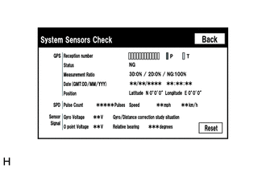
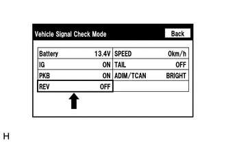

NAVIGATION SYSTEM(for Radio and Display Type) Vehicle Position Mark Deviates Greatly
CAUTION / NOTICE / HINT
Note
-
If standard size tires are not installed, the vehicle position mark may deviate from the route even if the navigation system is operating normally.
-
Make sure that standard size tires are installed to the vehicle before inspection.
PROCEDURE
-
CHECK CABIN
-
Check the cabin for any object that might interrupt radio reception on the instrument panel. If such an object exists, remove it and check if the vehicle position mark returns to the appropriate position.
Tech Tips
The GPS uses extremely faint radio waves originating from satellites. If the signal is interrupted by obstructions or other radio waves, the GPS may not be able to properly receive the signal.
OK After driving for a while, the vehicle position mark returns to the appropriate position. Result Proceed to OK NG
OK 
END
NG 
-
-
CHECK SURROUNDINGS
-
Check if the vehicle is in a location where GPS signal reception is poor. If the vehicle is in such a location, move the vehicle and check if the vehicle position mark returns to the appropriate position.
Tech Tips
The GPS uses 24 satellites in 6 orbits. At any point in time, 4 satellites should be able to pinpoint your vehicle. However, GPS signals may not reach the vehicle due to influence from the surroundings, vehicle direction and time. For examples, see the following illustration.

*a Example *b In a tunnel *c In a building *d Under an overpass *e On a forest or tree-lined path *f Between tall buildings *g Under a cliff or overhang - - OK After driving for a while, the vehicle position mark returns to the appropriate position. Result Proceed to OK NG
OK
SYSTEM RETURNS TO NORMAL
NG
-
-
CHECK SYSTEM SENSORS (OPERATION CHECK)
-

Enter the "System Sensors Check" screen. Refer to Check System Sensors in Operation Check.
-
Check how many of the following codes appear in "Reception number".
Tech Tips
T or P appears.
OK At least 3 codes appear. Result Proceed to OK NG
NG
PROCEED TO NEXT SUSPECTED AREA SHOWN IN PROBLEM SYMPTOMS TABLE Click here
OK
-
-
CHECK VEHICLE SIGNAL (OPERATION CHECK)
-
Enter the "Vehicle Signal Check Mode" screen. Refer to Check Vehicle Signal in Operation Check.
-

Check that the display changes between ON and OFF according to the shift lever operation.
OK Shift Lever Position Display Except R OFF R ON Tech Tips
The display is updated once per second. It is normal for the display to lag behind the actual switch operation.
Result Proceed to OK NG
OK
PROCEED TO NEXT SUSPECTED AREA SHOWN IN PROBLEM SYMPTOMS TABLE Click here
NG
GO TO "REVERSE SIGNAL DOES NOT CHANGE IN VEHICLE SIGNAL CHECK MODE" IN PROBLEM SYMPTOMS TABLE Click here
-